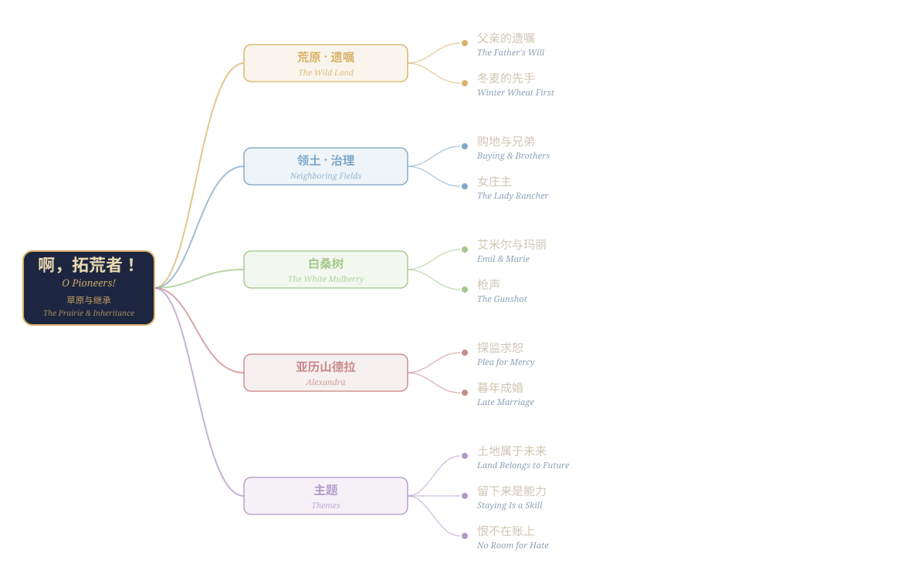

啊，拓荒者！
〇 · 书籍信息
基本信息
| 书名 | 《啊，拓荒者！》（O Pioneers!）——书名与题词直接取自惠特曼的同名长诗，把内布拉斯加草原放进美国的国家叙事 |
|---|---|
| 作者 | 薇拉·凯瑟（1873–1947），美国女作家，普利策奖得主。本书是她的「草原三部曲」第一部，写的是她童年生活过的内布拉斯加移民拓荒社区 |
| 出版 | 1913 年出版，分五部（荒原 / 领土 / 冬忆 / 白桑树 / 亚历山德拉）；题献词致萨拉·奥恩·朱厄特——「在她的精致劳作之中，蕴含着经久不衰的完美境界」 |
| 体裁 | 乡土拓荒小说（prairie novel）。女性继承土地、经营土地——1913 年的农业美国，这是相当超前的设定 |
| 一句话 | 父亲把草原分给儿女，只有大女儿亚历山德拉留下来：她守住土地、买下土地、改造土地——土地属于懂得等待的人；而急着的两个人（弟弟与爱人），一个送掉了性命，一个送掉了时代。 |
一 · 核心主题总览
五部的情节线里站着四组概念：① 土地与耐心（全书主轴）
柏格森家初到草原连年歉收，父亲临终把地交给大女儿亚历山德拉——不是给最能干的人，是给最沉得住气的人。她弟弟们要卖地进城，她要买地留乡：三十二年后的结局证明，土地奖励的不是勤劳，是判断加上等待。
② 移民与共同体
波希米亚人、瑞典人、法国人挤在同一片草原：语言不通、习俗各异，靠共同的天气与收成结成共同体。凯瑟写移民不写「融入」，写「互相借力」——美国性格是在互不相识的邻居之间长出来的。
③ 爱与代价
弟弟艾米尔与有夫之妇玛丽的爱，收束在白桑树下的一声枪响；亚历山德拉对老友卡尔的态度则是另一种答案——不占有、不催促、等对方自己回来。凯瑟把两种爱并排放在草原上，让读者自己掂量。
④ 女性与继承
亚历山德拉不是「女强人」模板：她不潇洒、不动人，靠的是耐心与算术。凯瑟要写的是一种被低估的品质——「留下来」是一种能力，不是一种失败。
二 · 第一部 荒原—— 遗嘱 · 分家 · 守土 ——
父亲的遗嘱
波希米亚移民约翰·柏格森在歉收十二年后的病榻上做出安排：家中长子未必可靠，把地留给二十二岁的大女儿亚历山德拉。她提议不卖地、抵押借款买下邻人的弃地、试种新式冬麦——家人半信半疑，唯老友卡尔支持她。凯瑟写父亲的病榻与遗嘱，笔调冷静：继承权交接的第一原则不是辈分，是判断力。卷首题词引惠特曼——凯瑟把内布拉斯加的草原接进了美国国族叙事的谱系。本书题献给萨拉·奥恩·朱厄特——凯瑟的前辈与「乡土写法」的引路人。
◆ 语言学习 · 遗嘱 · 分家
| homestead /ˈhəʊmsted/ | n. 宅地，家园 —— 例句：the homestead（第一部核心词）。Homestead Act《宅地法》是拓荒史背景词 |
|---|---|
| yield /jiːld/ | n./v. 收成；让步 —— 例句：the land refused to yield（歉收段）。一词两义方向相反：庄稼的 yield 是收获，人的 yield 是屈服 |
| mortgage /ˈmɔːɡɪdʒ/ | n./v. 抵押 —— 例句：mortgage the farm（买地段）。抵押是拓荒小说的高频词；死记：mort-（死）+ gage（担保） |
| resigned /rɪˈzaɪnd/ | adj. 顺从的，认命的 —— 例句：resigned to the way they have to live（她论树）。resign 辞职/听任双义 |
句型 ｜ 「I like trees because they seem more resigned to the way they have to live than other things do.」——比较级 than other things do 收尾，把树的品格与人的品格并排比较。借物喻人 + 比较级收尾，是英文写景言志的万能模板。
守土的赌注
灾年过去，旱灾与虫害把邻居逼走，土地贱卖；亚历山德拉一面照管自家，一面低价收进。弟弟奥斯卡与卢想要现金，兄妹龃龉渐深；她把钱投入土地与新农具。十六年后，草原还给了她丰收：买来的地成了农场，她在县里成了被人请教的女庄主。「荒原」到「领土」的转折不在运气，在她对土地的判断：别人看见荒，她看见待价而沽的将来。
◆ 语言学习 · 守土
| drought /draʊt/ | n. 旱灾 —— 例句：the drought years（灾年段）。拼写注意 ou-；drought-resistant 抗旱 |
|---|---|
| acreage /ˈeɪkərɪdʒ/ | n. 英亩数，面积 —— 例句：her acreage（购地段）。acre 的集合名词——「以亩计的资产」 |
| scant /skænt/ | adj. 稀少的 —— 例句：scant crops（歉收段）。scanty 形容词同族；scant attention「少得可怜的关注」 |
| dwell /dwel/ | v. 居住；细想 —— 例句：dwelt on the prairie（生活段）。dwell on sth「反复想某事」——一词两义都高频 |
习语 ｜ hold one's own 守住自己的位置——拓荒叙事的精髓短语：不求胜过别人，先确保自己不被扫地出门。守土叙事的第一动词不是 grow，是 hold。
三 · 第二部 领土—— 财产 · 邻里 · 归来 ——
女庄主的治理
亚历山德拉建成新农场：实制度、养畜群、扶助邻人。卡尔从外地回来，她的弟弟们却在财产问题上一再给她难堪——他们认定女人才产「嫁妆」，不产「产业」。她平静地立遗嘱：身后产业捐作乡间学舍基金。凯瑟写财产纠纷全部用静景：餐桌、遗书、田埂——把性别偏见写进不动声色的日常。
◆ 语言学习 · 治理
| deed /diːd/ | n. 契据；行为 —— 例句：the deed to the land（产权段）。一词两义：契约与行为——英文里「行动」与「凭据」共用一个词 |
|---|---|
| prosper /ˈprɒspə/ | v. 兴旺 —— 例句：the farm prospered（丰收段）。prosperous 形容词；prosperity 名词 |
| upbringing /ˈʌpbrɪŋɪŋ/ | n. 教养 —— 例句：her upbringing（家救段）。up- + bringing：被「带上大」的过程 |
| headstrong /ˈhedstrɒŋ/ | adj. 固执任性的 —— 例句：headstrong brothers（兄弟段）。head + strong：脑子一热的人 |
句型 ｜ 「Isn't it queer: there are only two or three human stories, and they go on repeating themselves as fiercely as if they had never happened before.」——冒号引出格言、现在进行时（go on repeating）表「至今仍在」，as fiercely as if 虚拟比较收尾。「人类故事只有两三个」的叙事观，一句话立住。
艾米尔与玛丽
弟弟艾米尔大学毕业归来，前途无着；邻家媳妇玛丽婚姻冷淡，两人在牧场与舞会间反复靠近。第三部「冬忆」用倒叙收拢两人往事；第四部「白桑树」在果园的月夜里走到顶点——玛丽之夫弗兰克持枪赶到，两人死于白桑树下。凯瑟不写偷情细节，只写月光下的果园与枪声后的空院——克制到近乎冷淡，反而最重。
◆ 语言学习 · 果园月夜
| mulberry /ˈmʌlbəri/ | n. 桑树 —— 例句：the white mulberry tree（第四部标题）。桑蚕文化词；the White Mulberry Tree 专名化 |
|---|---|
| divorce /dɪˈvɔːs/ | n./v. 离婚；分离 —— 例句：an unhappy marriage（婚姻段）。divorce… from「把…与…分离」 |
| reckless /ˈrekləs/ | adj. 不计后果的 —— 例句：reckless courage（艾米尔段）。reck（古义「在意」）+ -less：什么都不顾 |
| pardon /ˈpɑːdn/ | v./n. 宽恕 —— 例句：asking pardon（结尾求恕段）。I beg your pardon 的正式源头；法律义「赦免」 |
习语 ｜ the heart of a fool——「每个国家的历史都始于一颗愚人之心」（The history of every country begins with the heart of a fool）：一切开拓，始于明知不可为而为之。fool 在凯瑟笔下不是贬义，是拓荒者的别名。
四 · 第三部 亚历山德拉—— 守寡 · 奔走 · 归来 ——
结局与成婚
枪响之后，亚历山德拉独自承受双重打击：弟弟死了，挚友死了，凶手是她曾想宽恕的邻居丈夫。她探监，许诺尽力为弗兰克争取赦免——恨在草原上没有生存空间，日子比恨长。卡尔从远方回来，两人在暮年的草原上成婚：没有轰轰烈烈，只有「把剩下的日子种完」。终章回到她的土地上：公路、电杆、新移民——她守住的草原，成了别人眼中的家乡。
◆ 语言学习 · 成婚
| widow /ˈwɪdəʊ/ | n. 寡妇 —— 例句：the widowed land?（拟人段）/ a widow（终章）。widower 男鳏夫；widowed 形容词 |
|---|---|
| mercy /ˈmɜːsi/ | n. 仁慈，宽宥 —— 例句：appeal for mercy（探监段）。mercy plea 减刑请愿；at the mercy of「任凭摆布」 |
| solace /ˈsɒləs/ | n. 安慰 —— 例句：seeking solace（哀悼段）。与 comfort 辨析：solace 更书面、更内省 |
| gaze /ɡeɪz/ | v./n. 凝望 —— 例句：she gazed over the prairie（终章）。与 stare 辨析：gaze 是长时、缓速的注视 |
句型 ｜ 「The land belongs to the future… We come and go, but the land is always here.」——come and go 的动词对偶 + but 转折 + the land is always here 的短句落锤。把「人的短暂」与「土地的恒常」放进一个转折句，是英文乡土写作的骨架句。
五 · 人物图鉴与成长弧线—— 主角配角 · 一张表看穿 ——
主要人物
亚历山德拉 Bergson——全书支柱：从二十二岁的遗嘱执行人到中年的女庄主。弧线：守土 → 购地 → 治家 → 失亲 → 再婚。她的武器只有三样：判断、耐心、对土地的信心——凯瑟证明了这三样足以对抗一个时代。
艾米尔 Emil——弟弟：受过高教、前途无着、感情炽烈。弧线：归来 → 空转 → 与玛丽的爱 → 白桑树下身亡——有天赋无岗位的人，最容易在爱情里烧掉自己。
玛丽 Marie Shabata——邻家媳妇：明亮、多话、婚姻荒芜。她与艾米尔是全书唯一被写成「热」的两个人——而热，在草原的规则里没有位置。
卡尔 Linstrum——老友与归宿： engraver 蚀刻匠，一生漂泊。他代表另一种答案——失败可以体面，归来可以成家。
弗兰克 Shabata——玛丽之夫：多疑、失意、酗酒。他是被时代与婚姻同时挤扁的人——枪声既是罪，也是他全部话语的总和。
次要人物（功能位）
| 奥斯卡与卢 | 两个弟弟：要现金、要进城、要面子——「卖地派」的完整画像：把未来折现成眼前的体面 |
|---|---|
| 伊娃 Ivar | 「疯」伊瓦尔：住在草沟里的隐士，懂牲口、懂草药——被主流嫌弃的人往往最懂土地 |
| 琳达 Lydia | 妹妹：务实、少言——凯瑟给「留下来的女性」的第二种样本 |
| 坎农 Cannon 教士 | 乡村牧师：共同体道德的坐标——他在婚礼上的证词是全书的伦理落点 |
六 · 主题与象征—— 每个道具都在说话 ——
| 土地 ↔ 未来 | 「土地属于未来」是全书的总纲：谁与未来站在一边，谁就是最后的owner |
|---|---|
| 白桑树 ↔ 热情的刑场 | 果园里最美的树成了悲剧现场：美与危险共用一个地点 |
| 冬麦 ↔ 判断力 | 别人不敢种的冬麦是转折点：农业上的先手棋，就是判断力的一次具象化 |
| 电杆与公路 ↔ 时代的收编 | 终章的现代设施：拓荒者守住的东西，最终被时代拿去铺路 |
| 草沟 ↔ 边缘的智慧 | 伊瓦尔的草沟住所：主流之外，藏着土地的真知识 |
| 遗书 ↔ 产业的性别宣言 | 她把产业捐作学舍：女人留下的不是嫁妆，是制度 |
七 · 写作手法赏析—— 怎么写，就能怎么学 ——
① 风景即叙事
凯瑟写草原不写「美丽」，写「土地的脾气」：旱年的倔强、丰年的慷慨。风景全是性格——写景先问「它想要什么」，答案就是情节。
② 克制到冷淡的悲剧
白桑树的枪声只有一句，没有铺垫渲染。大事件用小笔墨，情绪留给读者自己长——短篇新闻式的写法让悲剧更重。
③ 倒叙收拢（冬忆）
第三部把前两部的伏线倒过来讲一遍：读者已知结局，再看过程全是细节。先给结果再给过程，是长篇里最省笔墨的悬疑法。
④ 题词与题献的互文
惠特曼的诗做题词、朱厄特的句做题献——开篇借两段文本给自己的书定位：一首给国族叙事，一句给文学师承。写作开卷可学。
八 · 名段欣赏—— 原文精读 · 逐段赏析 ——
九 · 金句摘录—— 11 条 · 中英对照 · 带出处 ——
"We debouch upon a newer mightier world, varied world."我们涌向一个更新更强、千姿百态的新世界。—— 题词 · 惠特曼《拓荒者！噢，拓荒者！》
"All the past we leave behind."我们把全部过去留在身后。—— 题词 · 惠特曼
"In her delicate and cultivated work there is a permanence which is of the very highest perfection."在她的精致劳作之中，蕴含着经久不衰的完美境界。—— 题献 · 纪念萨拉·奥恩·朱厄特
"I like trees because they seem more resigned to the way they have to live than other things do."我喜欢树，因为树比别的东西更顺从于自己不得不过的日子。—— 第一部 · 亚历山德拉
"Isn't it queer: there are only two or three human stories, and they go on repeating themselves as fiercely as if they had never happened before."怪就怪在：人类的故事只有两三个，却一代又一代重演得仿佛从未发生过。—— 第二部
"The history of every country begins with the heart of a fool."每个国家的历史，都始于一颗愚人的心。—— 第二部
"The land belongs to the future, Carl. That's the way it seems to me."土地属于未来，卡尔。在我看来就是这样。—— 第三部
"We come and go, but the land is always here."人来了又走，土地一直在这里。—— 第三部
"And the people who love it and understand it are the people who own it—for a little while."爱它懂它的人拥有它——只是暂时拥有。—— 第三部
"The land refused to yield."土地不肯给出收成。—— 第一部 · 灾年
"Freedom so often means that one man has chosen to hang himself."所谓自由，常常只是一个人选择了吊死自己。—— 第二部
十 · 拓展阅读—— 原文 · 词条 · 译文 ——
作者与文本
- O Pioneers! · 英文维基百科 —— 出版史与「草原三部曲」位置
- Willa Cather · 英文维基百科 —— 生平与普利策奖作品《-one of Ours》
- 《啊，拓荒者！》· 中文维基百科 —— 译本与评介
背景与师承
- Pioneers! O Pioneers! · 英文维基百科 —— 惠特曼原诗——书名的出处
- Sarah Orne Jewett · 英文维基百科 —— 题献词中的师承：乡土写作的鼻祖
延伸阅读
- Homestead Act · 英文维基百科 —— 《宅地法》：拓荒小说的法律地基
- 豆瓣 · 各中译本检索 —— 对照不同译本
十一 · 个人感悟与心得—— 三点心得 ——
读《啊，拓荒者！》：三点心得
其一，「留下来」是一种能力。灾年里最容易的动作是卖地走人，最难的动作是借钱买别人的地。亚历山德拉的全部优势只有判断加等待，等来的却是整个县。落到自己身上：人生的多数复利，来自在无人喝彩处坚持的那几年。可落地：给自己立一条「灾年规则」——行情最差、最想放弃的时段，先做三件小事（学一项技能、存一笔小钱、维护一段关系），不做大决定。
其二，把恨从资产负债表里清出去。枪响之后，亚历山德拉的第一反应是探监、求赦免——恨不在她的账上。这不是圣母，是清醒：恨占用的心理带宽，本来可以用于土地、工作与余生。动作很具体：把心里反复出现的三个怨名写下来，各自问一句「花在它身上的精力，三个月内能产生任何回报吗」，答不出的，划掉。
其三，判断力要从「先手」练起。她赢在冬麦——别人不敢种的时候种。所有领域都有自己的「冬麦」：共识形成之前的那个小决定，价值大于共识形成之后的十个大决定。练法：每季度给自己一个「与共识相反但成本可控」的小尝试（读一个冷门领域、试一个新工具、见一个圈外人），练的就是先手肌肉。
一句话收束：这本书把「守」写成了进攻——土地奖励的不是最强壮的人，是最懂它的人。人来了又走；爱它懂它的人拥有它，只是暂时。
十二 · 一页速查（复习用）
| 全书框架 | 五部：荒原（遗嘱）→ 领土（买地与兄弟）→ 冬忆（倒叙）→ 白桑树（悲剧）→ 亚历山德拉（成婚与终章） |
|---|---|
| 亚历山德拉弧线 | 受命守土 → 抵押购地 → 女庄主 → 失亲 → 探监求恕 → 暮年成婚 |
| 两条爱情线 | 艾米尔×玛丽（热·白桑树·身亡）↔ 亚历山德拉×卡尔（静·草原·成婚） |
| 关键道具 | 遗嘱 / 冬麦 / 抵押契据 / 白桑树 / 遗书（捐学舍）/ 电杆公路 |
| 拓荒词群 | homestead 宅地 / drought 旱灾 / acreage 面积 / mortgage 抵押 / yield 收成·屈服 |
| 词汇 TOP12 | homestead / yield / mortgage / resigned / drought / acreage / scant / dwell / deed / prosper / reckless / mercy |
| 历史背景 | 《宅地法》移民拓荒 / 波希米亚与北欧移民潮 / 内布拉斯加草原开发 |
| 对照阅读 | 《我的安东尼娅》（草原三部曲之二）· 惠特曼《拓荒者！噢，拓荒者！》 |
十三 · 全书思维导图—— 一图纵览 ——

一图纵览全书骨架 · 中英双语对照 · 手机端可左右滑动查看全图